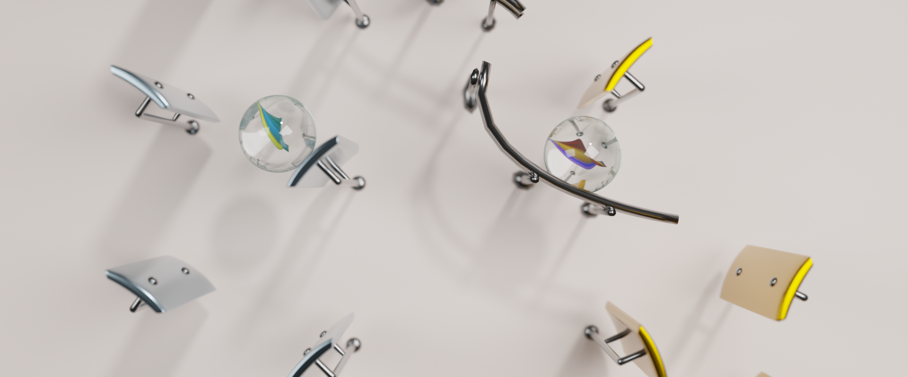

Marble Run Animations

Did you know that Blender has a scripting API and allows you to create your own tools and automations using Python?
I thought it was time to start experimenting with that and learning more about the possibilities.
I love learning new things by starting small personal projects, and what project is better than Marbles?
I started by calculating a (semi-) realistic path that a marble would take while falling down and bouncing off objects and
added that path as key frames to the animated marble.
I kept thinking of more features that would make the marble run cooler and I decided that it absolutely needed some music on the bounces.
So this is a list of features I have implemented so far:
- Read a music piece from its sheet music representation in musicXML
- Calculate the marble's path and rotations and set the marble's keyframes for the animation
- Move the Xylophone keys into the correct positions all at once or dynamically while rotating a key
- Color the keys depending on the note played
- Follow Bezier curves that are placed into the marble's path
For some results, check out the YouTube Channel @MagicalMarbleMelodies .